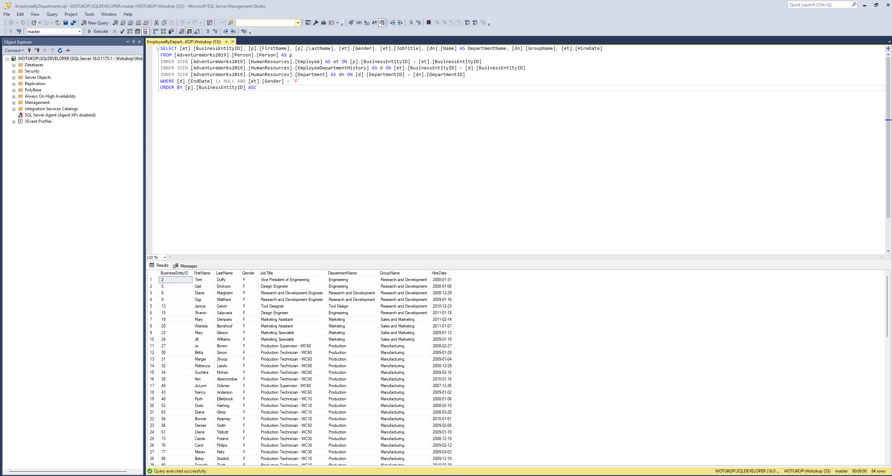
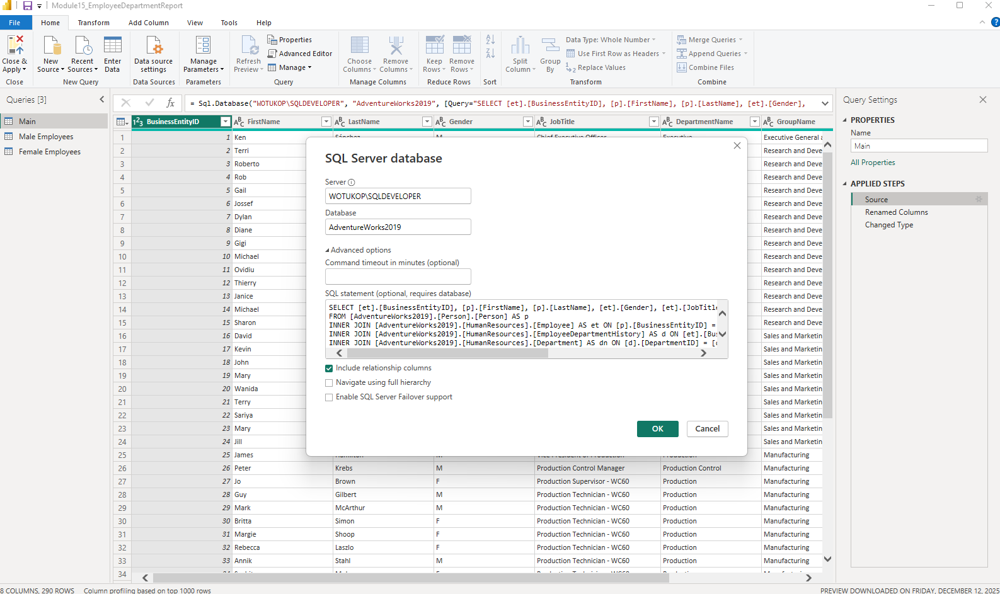
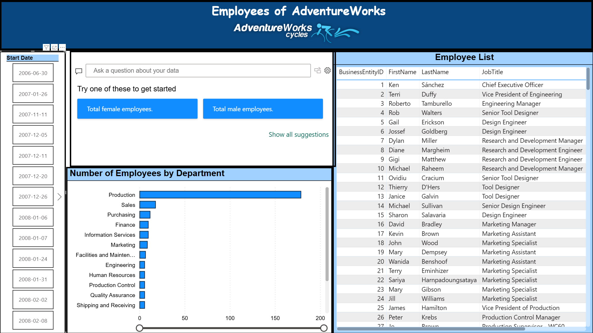
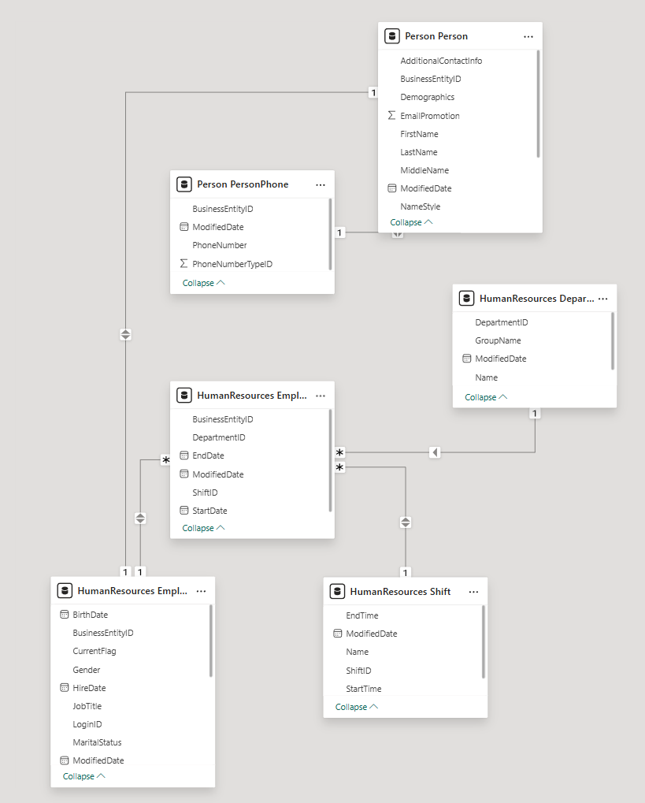
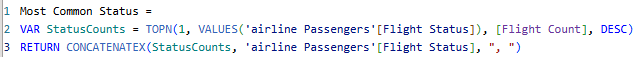
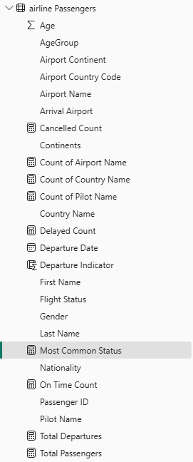
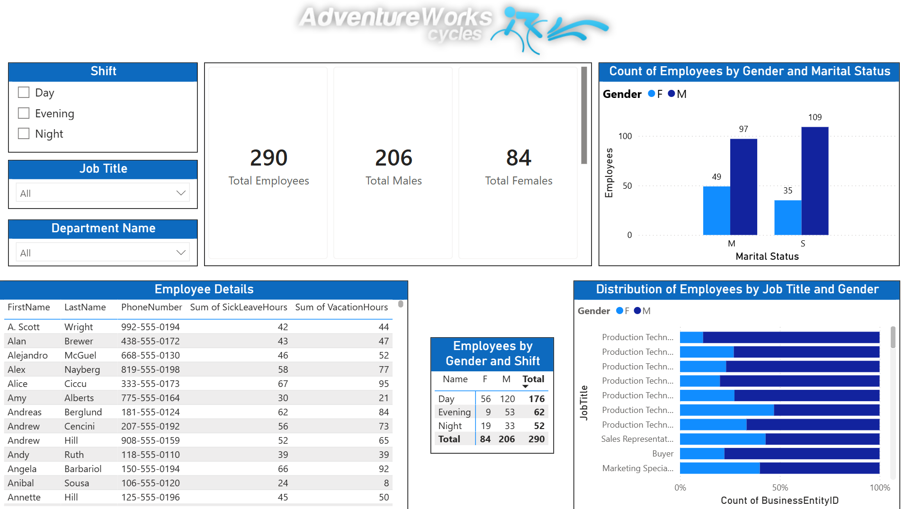
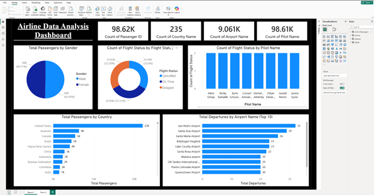
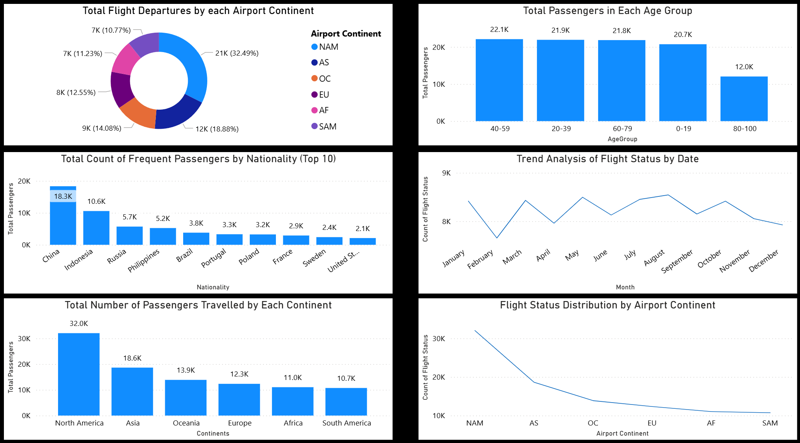
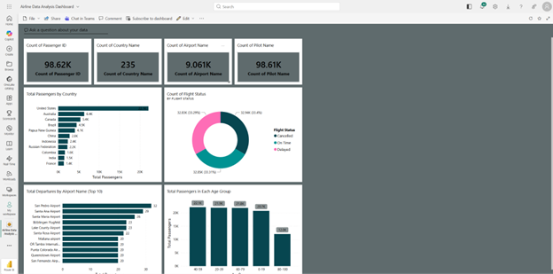

This course encapsulates advanced concepts from my BI Data 1 - Paginated and BI Data 2 - Interactive courses to ensure proficiency in professional report and dashboard building. The curriculum focuses on full-cycle data orchestration: importing raw data from a selected database, performing transformations, and designing reports.
Demonstrated proficiency in importing data directly from SQL Server Management Studio the Power BI Desktop.



Configured table connections and verified relationship links within Power BI Desktop to esnure stability.

To ensure a dynamic analysis I used DAX formulas to create measures before building my reports.


Designed reports that fulfill specific business requirements while maintaining a professional look and color scheme.



Published final reports to the Power BI Service and utilized tools to build dashboards for collaboration.

← Return to Academics